Louis Armstrong
The Master Jazz Trumpeter. One of the most influential figures in jazz.

Quick Facts
- Louis was born in New Orleans, Louisiana on August 4, 1901
- Louis Armstrong was also a talented singer; his gravelly voice became a trademark in his performances
- Louis used his platform to speak out against racism and discrimination
- Louis was one of the first musicians to use the solo as a form of improvisation
- Louis got his big break in 1922 when he joined King Oliver’s Creole Jazz Band in Chicago
Famous Music Titles
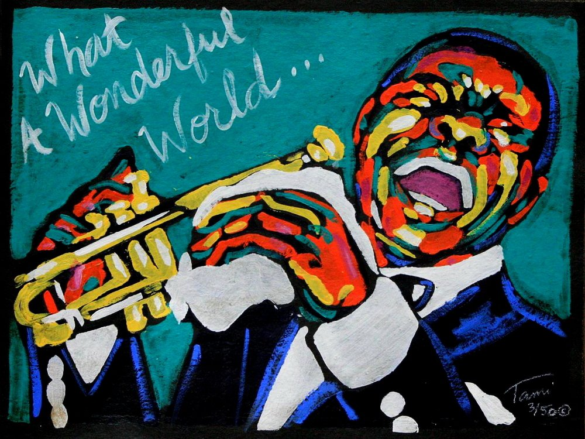
- What a Wonderful World
- The Frim Fram Sauce
- A Kiss to Build a Dream On
- Cheek to Cheek
- When You're Smiling
Interviews with Louis Armstrong
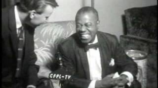

Louis Armstrong Visits the Dick Cavett Show! | The Dick Cavett Show
Louis Satchmo Armstrong Talks About Playing in Europe and for the Royal Family
Famous Collaborations
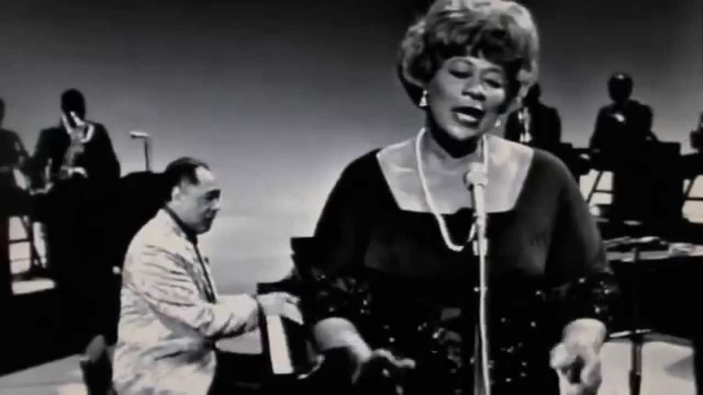
Louis Armstrong and Duke Ellington “It Don’t Mean a Thing (If It Ain’t Got That Swing)”
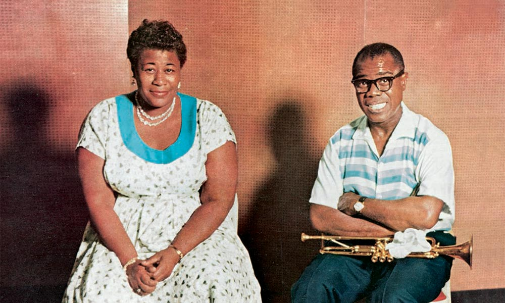
Ella Fitzgerald – Louis Armstrong “Dream a Little Dream of Me”
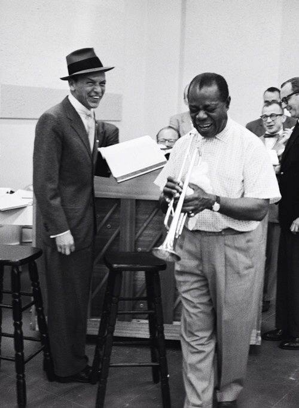
Sinatra and Louis Armstrong “Birth of the Blues”
Other Famous Artists Like Him
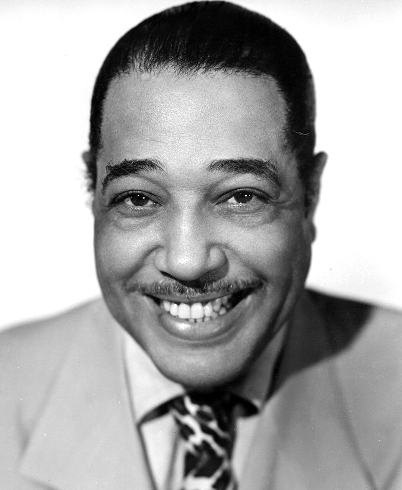
Duke Ellington
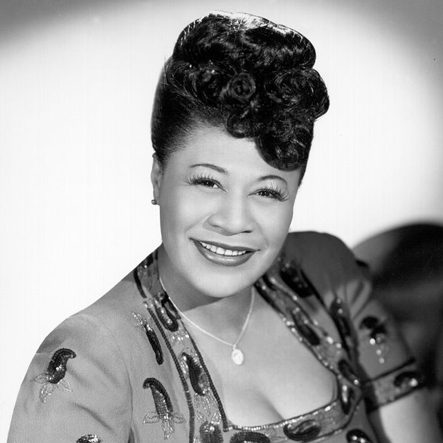
Ella Fitzgerald
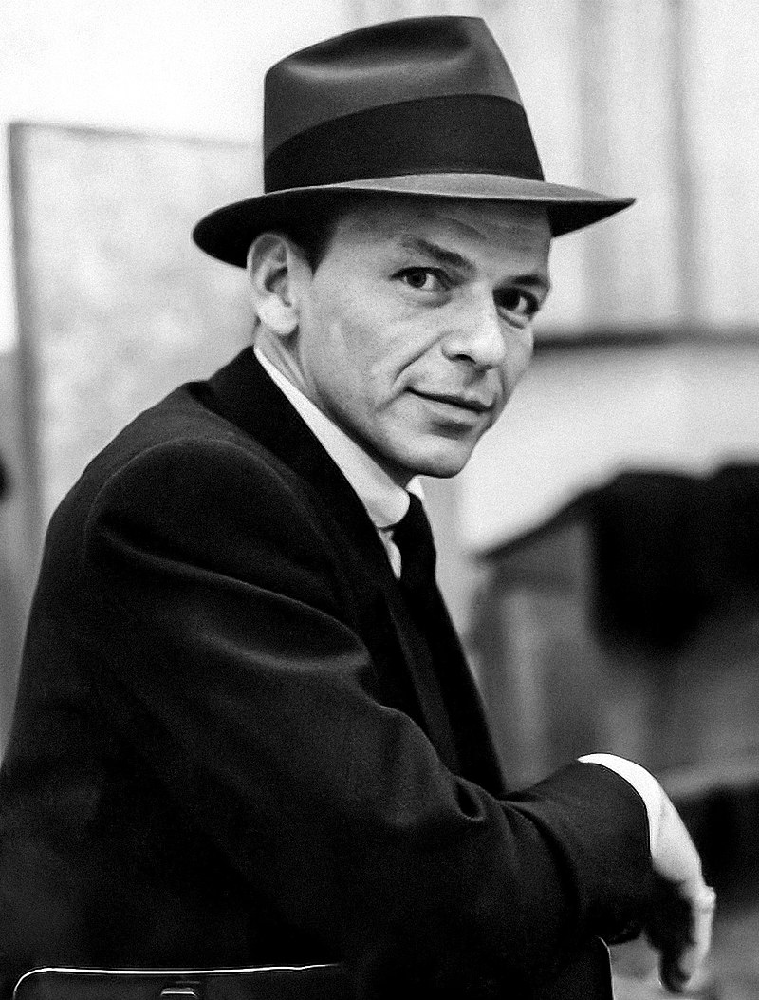
Frank Sinatra
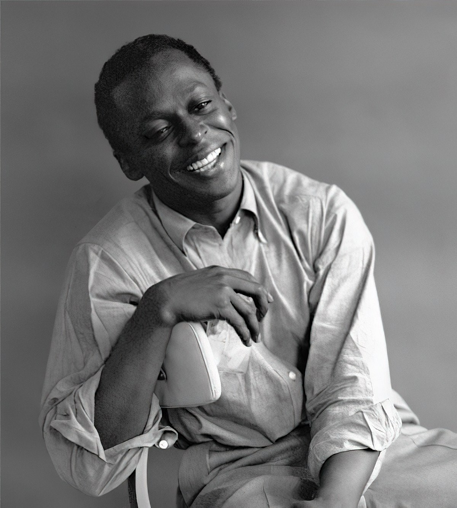
Miles Davis
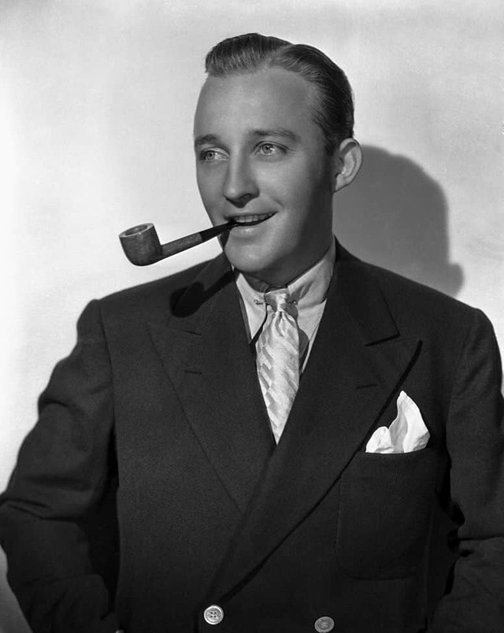
Bing Crosby
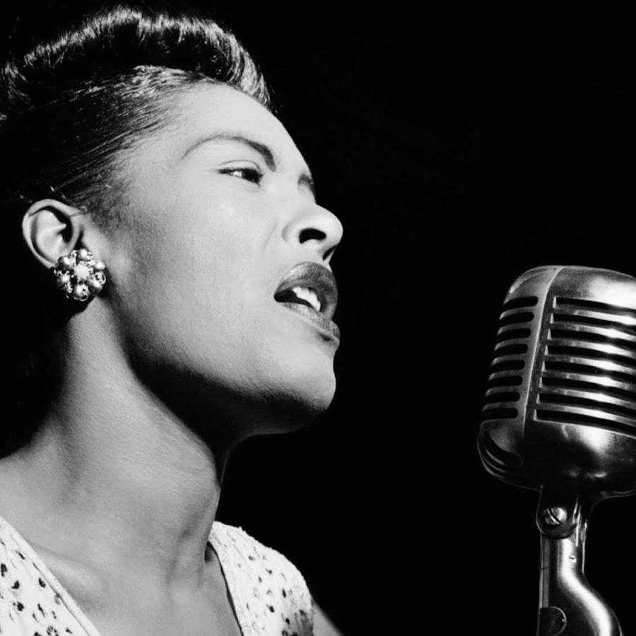